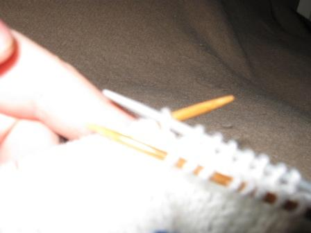
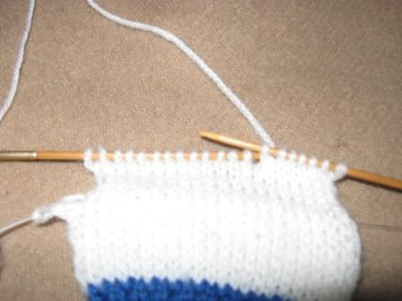
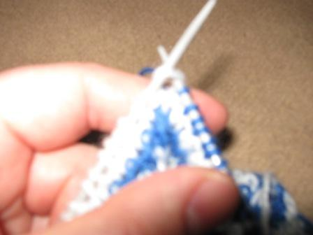
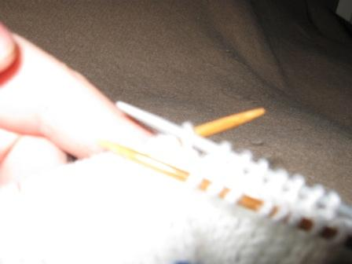
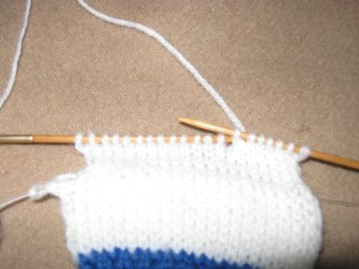
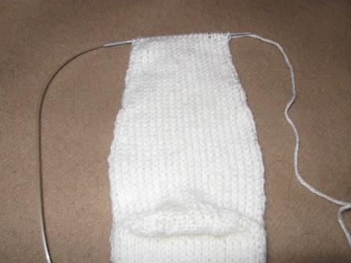

|  | |
|  | |
 |
| Давид Худавердян. Дом-страница |
1. Начинаем вязать носок сверху вниз. На кольцевых спицах. Обмерить периметр голени, набрать четное количество петель, соответствующее периметру голени и связать любую (1 лицевую одну изнаночную или 2 лицевые 2 изнаночные) резинку (10-15 см). Предлагаем вязать лицевые петли выворотными. Так резинка получается более красивой и упругой.
2. После резинки вяжем один, полностью изнаночный ряд. Складываем пряжу лицевой стороной наружу. Из середины вытягиваем леску, двигая пряжу к концу спиц. Берем третью, вспомогательную, спицу и переносим пряжу на эту спицу, поочередно снимая петли, то с одной, то с другой. Таким образом мы получаем на вспомогательной спице ряд из изнаночных и лицевых петель.
|  | |
3. Лицевую петлю мы провязываем, а изнаночную - просто снимаем, не провязывая (нитка при этом остается спереди пряжи, так как-будто мы хотим провязать изнаночную петлю). Таким образом у нас получается, что мы с помощью двух спиц вяжем пряжу, состоящую с внешней стороны из лицевых петель, а с внутренней стороны – из изнаночных (получается цилиндр без шва). Следующий ряд вяжется также: лицевые петли провязываем, изнаночные - просто снимаем, не провязывая (эта технология используется при вязке шарфов в виде цилиндра). Надо отметить, что изнаночные петли - это те же лицевые, которые мы вяжем по кругу с помощью двух спиц. Таким образом вяжем примерно 5 см.
4. Вязание пятки. В пункте 3 мы с двух спиц пряжу перевели на одну, сейчас все наоборот. Мы с одной спицы пряжу переводим на две: лицевые на одной спице, а изнаночные на второй. Одну из этих частей мы оставляем на вспомогательной спице, а вторую вяжем. Количество петель делим на три части. Если они не делятся ровно на три, то важно, чтобы количество петель по бокам было бы одинаково. Начинаем провязывать пятку. Количество петель, находящееся в середине должно быть всегда неизменным. В каждом лицевом ряду провязываем вместе по две петли, одну до средней части, вторую после. До тех пор, пока не кончатся петли с боковых сторон.
|  | |
|  | |
|
5. С помощью крючка мы набираем то же самое количество петель на боковых ребрах получившейся трапеции и провязываем их. Мы кончили вязать пятку. Должно получится такое же количество петель, которое было вначале.
6. Снова спариваем также как и в пункте 2 на третью, вспомогательную спицу. Получилась выпуклая пятка.
7. Переходим к вязанию стопы. Вяжем цилиндр, также как и в пункте 3. Но через каждые 2 см. с двух сторон провязываем вместе 2 петли до начала провязывания носовой части.
|  |
8. Носовая часть. Снова разъединяем пряжу с помощью третей вспомогательной спицы. И вяжем по кругу. На каждом ряду, на каждой спице провязываем вместе третью с четвертой петлей в начале и в конце ряда, пока они не сойдутся посередине. Оставшиеся по 6 петель с каждой стороны спариваем как в пункте 2 и, провязывая попарно, закрываем. Носок готов.
 |
|
9. Второй носок вяжется зеркально первому, советуем при вязке первого носка записывать количество петель в рядах, для облегчения зеркальной вязки второго.
10. Сшиваем боковые швы на двух носках в секторе резинки, и носки готовы.
11. Просьба отзывы и предложения направлять на khdavid@mail.ru